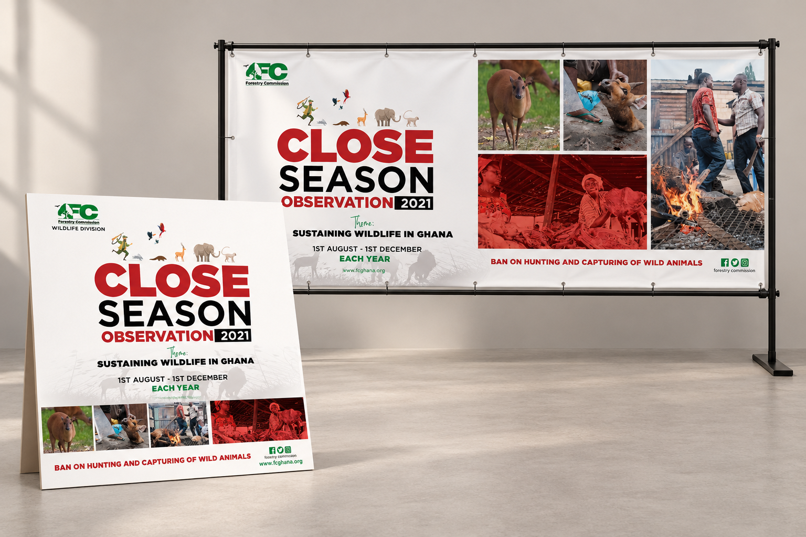
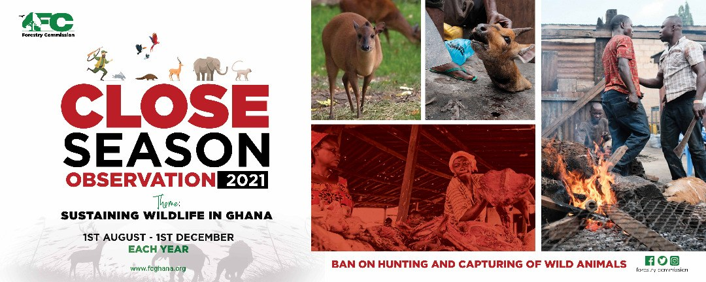
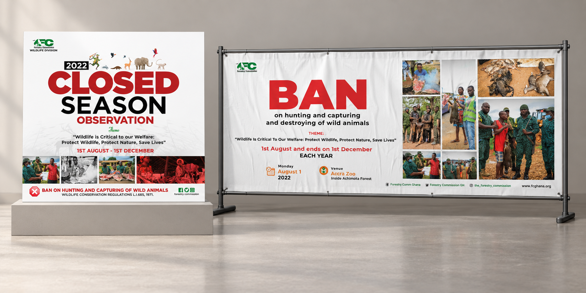
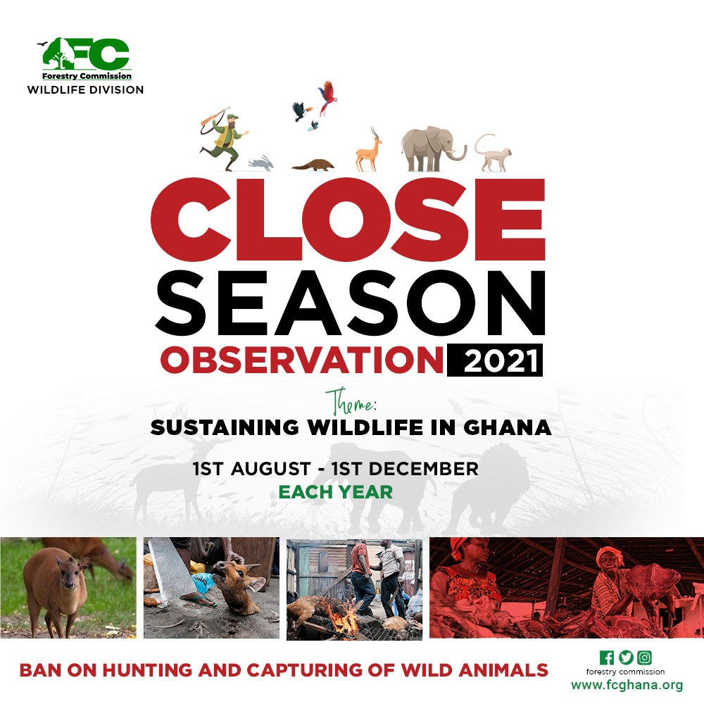
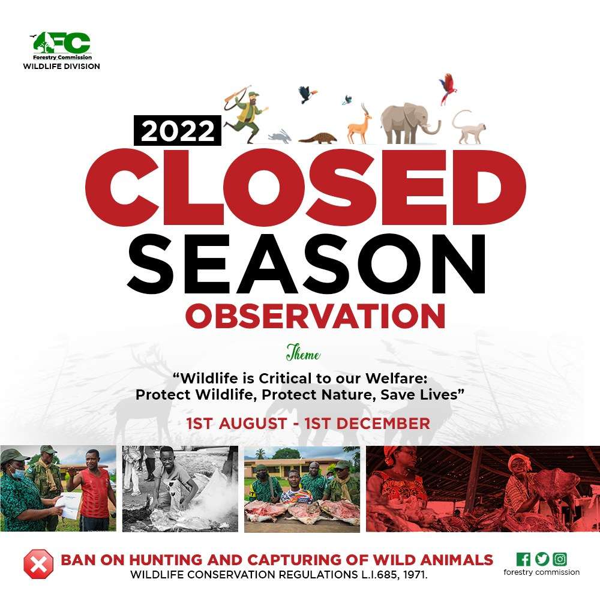
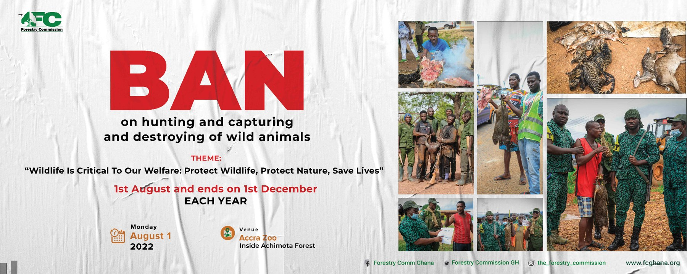

CONSERVATION / CAMPAIGN DESIGN / 2021 & 2022
One message.
Across different formats.
My close-season work brought together campaign graphics and video, carrying conservation messaging across banners, social posts and filmed coverage.

Close-season campaign · 2021
View full size ↗
Close-season campaign banner · 2021
View full size ↗THE MESSAGE
Making conservation visible.
I worked on close-season campaign materials for 2021 and 2022. The artwork brought together wildlife imagery, prominent headlines and the campaign dates, giving the message a recognisable presence across different formats.
The banner and social versions use different layouts for the same subject. In the wide format, the headline sits alongside a sequence of photographs. The square versions bring the main message forward for a social feed.

Close-season campaign · 2022
View full size ↗
Social campaign artwork · 2021
View full size ↗
Social campaign artwork · 2022
View full size ↗
Campaign banner · 2022
View full size ↗THE CAMPAIGN IN MOTION
Taking the message into video.
My video work sits alongside the graphics, combining campaign messaging with filmed activity and event coverage.
Close-season campaign 2021
Campaign coverage bringing together conservation messaging and event footage.
7:23 · Play with soundClose-season monitoring 2021
A short campaign film combining field footage, motion graphics and close-season messaging.
0:34 · Play with sound